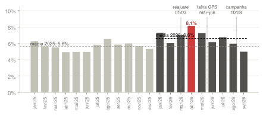
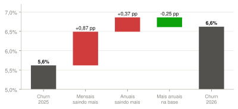
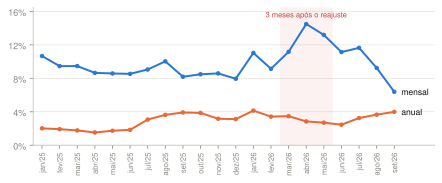
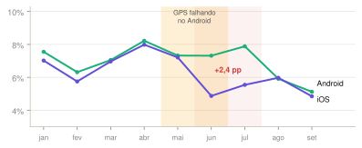
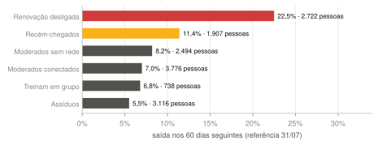
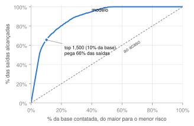
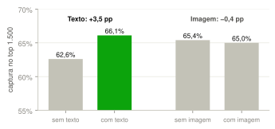
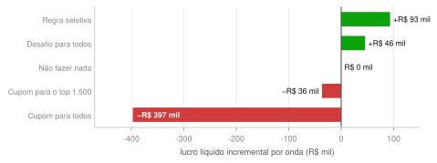
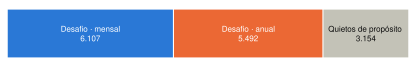

Como saímos de "o churn subiu e ninguém sabe por quê" para uma regra que diz quem contatar, com qual mensagem, e quanto isso rende. Cada conclusão é construída a partir da anterior.
6,6%churn mensal em 2026, contra 5,6% em 2025
3causas da subida: preço do mensal, GPS do Android e renovações anuais
66%das saídas estão entre os 1.500 de maior risco (10% da base)
R$ 93 milde lucro incremental por onda de contato, contra não fazer nada
O caminho do raciocínio
#
Pergunta
Resposta curta
1
Os números da empresa batem?
Sim. A reconstrução pelos eventos reproduz todos os números do enunciado.
2
Por que o churn subiu?
Reajuste do mensal, falha de GPS no Android e renovações anuais chegando.
3
Quem são os assinantes?
Seis grupos; quem já desligou a renovação concentra o risco.
4
Dá para prever quem sai?
Sim: 10% da base contém 66% das saídas.
5
Texto e imagem ajudam?
Texto sim (+3,5 pp, por R$ 70). Imagem não.
6
Contatar funciona?
Depende de quem: ajuda o mensal ativo, piora o anual que não usa.
7
Quanto rende?
R$ 93 mil por onda; o cupom em massa perde R$ 397 mil.
8
O que dizer?
Texto escrito por IA, a partir de um briefing com limites.
+
Em que isso se apoia?
Apêndice: as técnicas e os conceitos teóricos de cada etapa.
Como ler este documento
▲ problemavermelho marca perda, piora ou risco. Nos gráficos, a barra ou o ponto que precisa de atenção.● conclusãoverde marca ganho, efeito que funciona e cada conclusão que sustenta a próxima etapa.◆ atençãoâmbar marca incerteza: o que ainda depende de teste ou de confirmação.■ contextocinza é referência: o passado, o controle, o que não mudou.técnicaetiquetas azuis no início de cada etapa: o método usado ali, detalhado no apêndice.azul = plano mensal, laranja = plano anual, em todos os gráficos.
Fonte: data room Vitaliza, exportado em 01/10/2026 com corte em 30/09/2026. Todas as contas estão em vitaliza_dataroom/Vitaliza_analise.ipynb.
Ponto de partida
O que a empresa não sabe, e por que isso custa caro
A Vitaliza tem 14.753 assinantes pagantes e perde, em média, 6,6% deles por mês. Repor um assinante custa R$ 118 de aquisição, o equivalente a três mensalidades e meia de receita líquida. Com menos gente nova chegando ao mercado de apps de treino, o crescimento depende de manter quem já paga.
O enunciado aponta quatro lacunas. A análise responde a cada uma, nesta ordem:
▲ lacuna 1
Ninguém sabe explicar por que o churn subiu em 2026. Há três suspeitos (reajuste, pesquisa de saída, campanha) e nenhum foi testado.
▲ lacuna 2
70% dos assinantes cancelam pela loja do celular, fora do app. A empresa só vê "renovação desligada" e "expirou", sem o motivo.
▲ lacuna 3
A campanha de 10/08 foi um sorteio com grupo de controle, o único experimento da base, e o resultado nunca foi analisado.
▲ lacuna 4
O CRM tem teto: 1.500 WhatsApps e 300 atendimentos por mês. Escolher quem recebe o contato não é opcional.
A lógica da solução
As respostas se encadeiam. Sem um número confiável de ativos não há churn; sem churn não há diagnóstico; sem diagnóstico, o modelo prevê sem explicar; sem o sorteio de agosto, não se sabe se contatar ajuda; e sem saber se ajuda, não há como calcular o retorno.
Medirreconstruir quem estava ativo em cada data
Explicartestar cada suspeito contra um grupo de comparação
Preverordenar a base pelo risco de sair em 60 dias
Decidircontatar só onde o sorteio mostrou efeito
Calcularcontar só a receita que o contato criou
■ premissas de negócio usadas
Mensal R$ 39,90 (R$ 34,90 até 28/02/2026) · anual R$ 299,90 · taxa de 15% nas lojas, 3,5% no cartão, 0,99% no Pix · custo de servir R$ 4,20 por mês · CAC R$ 118 · e-mail R$ 0,01, WhatsApp R$ 0,40, CS R$ 18 por contato · orçamento de CRM de R$ 40 mil por mês, incluindo descontos e IA.
Antes de explicar o churn, é preciso contá-lo do jeito certo
Quantos assinantes a Vitaliza tinha, e quantos perde por mês?
TécnicasCRISP-DMreconstrução de estado a partir de log de eventospopulação em riscoqualidade de dadosnormalização de fuso (UTC → BRT)
A pergunta parece simples, mas o arquivo óbvio dá a resposta errada. assinaturas.csv é um retrato de 01/10/2026: cada vez que uma assinatura muda, o campo é sobrescrito. Ele diz como cada assinatura estava no fim, não como estava em março. A situação em qualquer data passada só sai do histórico de eventos.
A regra adotada
Ativo numa data = tem um período pagante aberto. O período começa em assinatura_iniciada e termina em assinatura_expirada ou reembolso.
Quem desligou a renovação continua ativo até o fim do período já pago, como manda a regra das lojas.
Assinaturas anteriores a 07/2024 (quando o log começa) entram como ativas no início do log, se ainda não tinham terminado.
Fuso: 68% dos eventos vêm das lojas em UTC; o resto, do site, em horário de Brasília. Tudo foi convertido para Brasília antes de cortar por mês.
O teste da regra: ela reproduz os números da empresa?
Medida
Enunciado
Reconstruído
Ativos em 30/09/2026
14.753
14.753
● igual
Ativos no início de janeiro/2025
8.540
8.540
● igual
Abril/2026: perdas sobre ativos
1.154 / 14.237
1.154 / 14.237
● igual
Ativos no início de setembro/2026
14.319
14.319
● igual
Churn médio 2025 · jan–set/2026
5,6% · 6,6%
5,6% · 6,6%
● igual
Churn mensal, jan/2025 a set/2026 · perdas no mês ÷ ativos no início do mês. Cinza = 2025, escuro = 2026, vermelho = pior mês.

O que foi limpo nos dados
Arquivo
Problema
Tratamento
pagamentos
12% dos valores no formato "R$ 34,90"; o resto como "34.90"
convertido para número
usuarios
sexo em 6 grafias, sistema em 5 (ios, iOS, IOS), cidade em 36 grafias para ~13 cidades
normalizado; cidade substituída por UF
atividades
tipo de treino em português e inglês (run, walk, strength, ride)
unificado em português
onboarding
dias por semana em 23 grafias ("3x", "3 vezes", "todos"); 30% de objetivos vazios ("nada", "asdf", emoji)
número extraído; categoria "vazio"
assinaturas
60 cortesias com canal "interno"
fora da base pagante
● conclusão 1
A base está medida e confere com a empresa. O churn subiu um ponto, de 5,6% para 6,6%, com pico de 8,1% em abril, logo depois do reajuste. A falha de pagamento (churn involuntário) ficou estável, 0,43 pp em 2025 e 0,46 pp em 2026. A subida é de gente que decide sair.
A subida tem três causas, e elas pesam de forma diferente
O que mudou entre 2025 e 2026, e para quem?
Técnicasdecomposição taxa × mixdiferença em diferençastriangulação de fontesviés de seleção
O primeiro passo é separar o churn por plano. O mensal e o anual se comportam de forma muito diferente: o mensal perde gente todo mês; o anual só perde na renovação. Se a base muda de composição, a média muda mesmo sem ninguém mudar de comportamento.
De onde vem o ponto a mais de churn · contribuição de cada efeito, em pontos percentuais. Vermelho empurra para cima, verde para baixo.

Quase 90% da alta vem dos mensais saindo mais. Os anuais também saem mais (+0,37 pp), e o aumento da fatia de anuais na base, que saem menos, segura parte da alta (−0,25 pp). As próximas páginas testam cada causa.
Hipótese A · O reajuste do mensal em 01/03/2026
Como testar: só o mensal subiu de preço; o anual não. O anual serve de grupo de comparação. Se algo geral (estação, mercado) piorou o churn, os dois planos sobem juntos; se foi o preço, só o mensal sobe. É a diferença em diferenças.
Churn mensal por plano · a faixa vermelha marca os três meses depois do reajuste.

Plano
set/25–fev/26
mar–mai/26
Variação
Mensal (teve reajuste)
8,9%
13,0%
+4,1 pp
Anual (sem reajuste)
3,6%
3,0%
−0,6 pp
Diferença em diferenças
+4,7 pp/mês
Outra forma de ver: dos mensais ativos em 1º de março, 24,5% saíram em 90 dias em 2025 e 33,3% em 2026, quase 9 pontos a mais. A pesquisa de saída aponta na mesma direção: preço é o motivo mais citado (41% das 643 respostas), embora a pesquisa só ouça quem paga pelo site e quis responder.
● conclusão 2A
O reajuste é a principal causa da subida. Ele explica cerca de 4,7 pontos a mais de churn por mês no mensal, entre março e maio. O efeito arrefece a partir de junho.
Por que suspeitar: em junho, o churn caiu no iOS e não no Android. Três fontes independentes contam a mesma história:
Treinos
Em maio e junho, 19% dos treinos ao ar livre no Android foram gravados sem GPS (gps_ok falso). No iOS, 0%. Nos outros meses, 0% nos dois.
Suporte
535 e 418 chamados sobre GPS em maio e junho; zero em todos os outros meses. 46% deles foram registrados pelo atendente fora da categoria "técnico".
Saída
Em junho e julho, o churn do Android ficou 2,4 pp acima do iOS. De janeiro a maio, a distância era de 0,3 pp.
Churn mensal por sistema, 2026 · faixa âmbar: meses com GPS falhando; faixa vermelha: meses em que o Android perdeu mais gente.

● conclusão 2B
Uma falha de GPS no Android, em maio e junho, levou a mais saídas um mês depois. Nenhuma mensagem de retenção resolve um defeito: é um incidente de produto que precisa virar alerta de retenção.
Hipótese C · As renovações anuais
O plano anual cresceu muito no segundo semestre de 2024. Um ano depois, essas assinaturas chegaram à primeira renovação, quando o assinante decide de novo se paga. Em janeiro, por exemplo:
Janeiro
Anuais ativos em 1/jan
Vencem no mês
Saem entre os que vencem
2025
4.358
224
37%
2026
7.125
670
44%
● conclusão 2C
Mais anuais chegando à renovação (o triplo em janeiro), e um pouco mais deles saindo nessa hora. O momento de agir no anual é antes do vencimento.
O que foi descartado
Suspeito
Teste
Resultado
Falha de pagamento
perdas depois de período de carência
■ estável 0,43 → 0,46 pp
Perfil da base
mix de canal de aquisição, sistema e cobrança, jun/25 × jun/26
■ estável só os anuais cresceram (+4 pp)
Pesquisa de saída
ela só registra o motivo; não muda o fluxo de cancelamento
■ não é causa
◆ limite
Só o reajuste tem um grupo de comparação (os anuais), e mesmo ele não é um experimento. GPS e renovações são associações fortes, coerentes entre fontes, mas não provas de causa.
Seis grupos de assinantes, com risco muito diferente
Quem são os assinantes, em grupos que qualquer área entenda?
Técnicask-meanspadronização z-scoretransformação logcoeficiente de silhueta
Agrupamos os assinantes ativos no corte pelo comportamento: dias ativos e aberturas do app, número de treinos, tendência de uso, seguidores, treinos em companhia, tempo de casa, plano e renovação. As variáveis foram padronizadas (e as muito assimétricas, como seguidores, passadas para log) para que nenhuma domine o agrupamento. A informação de quem saiu não entra: os grupos são descritivos, não preditivos.
Saída nos 60 dias seguintes, por grupo · risco observado a partir de 31/07; vermelho > 20%, âmbar > 10%.

Grupo
Como se comporta
% mensal
Dias ativos/mês
Renovação desligada
já desligaram a renovação; quase sem uso; quase todos anuais
2%
0,4
Recém-chegados
cerca de um mês de casa, sem seguidores
65%
5,7
Moderados sem rede
treinam ~4 dias por mês; quase ninguém os segue
47%
3,9
Moderados conectados
mesmo uso, mas com seguidores
50%
3,9
Treinam em grupo
marcam companhia nos treinos
52%
7,3
Assíduos
treinam 12 dias por mês
50%
12,5
O padrão é claro: uso e rede protegem. Os assíduos saem 5,5%; quem treina sozinho e pouco, 8,2%; o recém-chegado, que ainda não criou hábito nem rede, 11,4%.
◆ atenção
A separação entre os grupos é fraca (silhueta 0,18): eles são faixas de comportamento, não ilhas. Servem para comunicar e escolher o tom da mensagem. A decisão de contato usa o recorte em que o sorteio de agosto mede efeito (etapa 6).
● conclusão 3
O risco se concentra em quem já desligou a renovação (22,5% saem em 60 dias) e nos recém-chegados (11,4%). Hábito e rede social são o que segura o assinante, e é isso que o desafio estimula.
Dez por cento da base concentra dois terços das saídas
Qual a probabilidade de cada assinante sair nos 60 dias seguintes ao corte, até 29/11/2026?
Técnicasvalidação fora do tempoprevenção de vazamentoregressão logísticaárvore CARTrandom forestgradient boostingAUC · curva de ganhocalibração
Como o modelo foi montado para não se enganar
Separação no tempo. Treino com fotos da base em 01/03, 01/04, 01/05 e 01/06/2026 (56.569 linhas). Teste com a foto de 31/07/2026 (14.049 assinantes), que o modelo nunca viu.
Sem informação do futuro. Cada variável usa só dados anteriores à data da foto. Os campos de fim de assinatura ficam fora.
Quatro modelos, do simples ao complexo: regressão logística (referência), árvore de decisão (legível como regra), random forest (bagging) e gradient boosting.
Modelo
AUC
Captura top 1.500
Regressão logística
0,932
65,3%
Árvore de decisão
0,917
63,0%
Random forest
0,936
66,5%
Gradient boosting
0,935
66,1%
Ao acaso
0,500
10,2%
Captura no top 1.500 = das pessoas que de fato saíram, quantas estavam entre as 1.500 de maior risco. É a medida que importa para o CRM, que só tem 1.500 WhatsApps.
Os quatro modelos ficam próximos; a logística, mais simples, perde só 1 ponto. Usamos o gradient boosting, empatado com o melhor e mais estável entre as datas.
Curva de captura · contatar do maior para o menor risco.

O que o modelo olha
As variáveis mais fortes, em ordem: dias até a próxima cobrança, renovação desligada, tempo de casa, dias desde o último treino, idade e post de "meta cumprida". Faz sentido: quem desligou a renovação já decidiu; quem tem cobrança dentro da janela pode sair agora; e quem acabou de cumprir uma meta (a prova, o casamento, a viagem) perde o motivo para seguir pagando.
◆ atenção
Parte da precisão vem de quem já desligou a renovação, que é fácil de prever e difícil de recuperar. Entre quem ainda está com a renovação ligada, onde dá para prevenir, a AUC é 0,85, ainda forte. No decil de maior risco o modelo superestima um pouco (prevê 77%, ocorrem 69%), por isso é recalibrado a cada mês.
● conclusão 4
A lista de risco funciona: os 1.500 do topo concentram 66% das saídas, seis vezes o acaso. Para o corte, o modelo prevê 1.794 saídas até 29/11; o risco médio é de 19% no mensal e 7% no anual. Mas risco não diz se o contato ajuda. Isso só o sorteio responde (etapa 6).
Texto paga o que custa; imagem não acrescenta nada
Posts, chamados, questionário e mapas de calor melhoram a previsão o bastante para pagar o custo de processá-los?
Técnicasextração com esquema fixoLLM como anotadorpadrão-ouro rotuladoablaçãosegmentação de imagem por cor
Texto e imagem não entram num modelo como estão: precisam virar campo. Cada fonte foi transformada com um esquema fixo de saída. Nesta versão, a extração foi feita por regras (dicionários e expressões regulares) que devolvem os mesmos campos que o prompt do LLM devolverá em produção:
Fonte
Campos extraídos
Exemplo
Posts da rede
meta cumprida · meta futura · mudança de vida · lesão · falha do app · intenção de sair
"medalha no peito, a maratona concluída" → meta cumprida
Chamados
tema real: GPS · sincronização · cobrança · cancelar · conta
"o app não grava meu percurso" → GPS (o atendente marcou "cobrança")
Questionário de entrada
objetivo: evento com data · saúde · social · estética · vazio; dias por semana
"preciso estar pronta pra formatura" → evento com data
Mapas de calor
área percorrida · intensidade · parque, água ou praia em volta da rota
contagem de pixels por cor
Ganho na captura do top 1.500 · cada par medido no seu próprio teste.

Custo de extrair com IA, por rodada
Como
Chamadas
Custo
Uma vez por linha
187.660
R$ 464
Uma vez por frase distinta
28.341
R$ 70
Mapas com LLM de visão
13.047
R$ 47
Os textos se repetem muito ("funcional em casa", "perna destruída"), então extrair cada frase distinta uma vez e reaproveitar o resultado corta o custo em 85%. Preços de exemplo de um modelo pequeno (US$ 1 / US$ 5 por milhão de tokens, dólar a R$ 5,50).
Texto: nos quatro modelos, a captura sobe de 3,5 a 4,3 pontos. São cerca de 50 a 60 saídas a mais encontradas em cada lista de 1.500, por R$ 70. Imagem: quem tem mapa sai menos (9% contra 20%), mas o modelo já sabe disso pelo número de treinos; o mapa não acrescenta nada.
◆ pendente
A extração ainda precisa ser conferida contra uma amostra rotulada à mão. 300 textos sorteados estão em outputs/amostra_rotulagem.csv; o notebook calcula o acerto assim que a coluna for preenchida.
● conclusão 5
Usar texto, extraído uma vez por frase distinta. Não usar imagem, nem por pixels nem por LLM de visão. O texto também revela o que nenhuma tabela mostra: o assinante que acabou de cumprir a meta e o chamado de GPS escondido em "cobrança".
Técnicasexperimento randomizado (A/B)intenção de tratarintervalo de confiança 95%efeito heterogêneouplift · tipologia de Siegel
Em 10/08, os 14.120 pagantes foram sorteados em quatro grupos: desafio, cupom, conteúdo e controle (sem mensagem). Como o sorteio iguala os grupos em média, a diferença de saída entre um grupo e o controle é efeito da mensagem. Medimos dois resultados até o corte (51 dias): saiu e desligou a renovação. O segundo é o sinal que importa no anual, que só sai na renovação.
No total, o efeito é pequeno (o cupom reduz a saída em 1,9 pp). Mas a média esconde efeitos opostos. Separando por plano, uso e renovação:
Efeito de cada mensagem contra o controle · ponto = efeito; linha = intervalo de 95%. Verde reduz a saída, vermelho aumenta, cinza não se distingue de zero.
Grupo
O que aconteceu
Tipo (Siegel)
Mensal ativo
● as três mensagens reduzem a saída: cupom −5,9 pp, desafio −4,3 pp, conteúdo −3,0 pp (controle: 11,6%)
persuadíveis
Anual ativo
● o desafio reduz o desligamento em 3,8 pp; cupom e conteúdo não fazem diferença
persuadíveis ao desafio
Anual dorminhoco
▲ qualquer mensagem triplica o desligamento: de 8% para cerca de 25%
não perturbe
Renovação já desligada
■ nenhuma mensagem faz voltar
perdidos
O dorminhoco anual é o caso mais importante. Ele paga por um app que quase não usa e não pensa nisso até a mensagem lembrá-lo. É exatamente o grupo que o enunciado descreve como "os que não se deve perturbar".
● conclusão 6
A regra não é "contatar quem tem mais risco". É contatar onde o sorteio mostrou efeito: mensais e anuais ativos recebem o desafio. Os dorminhocos anuais e quem já desligou a renovação ficam quietos. O WhatsApp e o CS ainda não têm efeito medido; entram como teste sorteado, apontados pela lista de risco.
A regra seletiva rende R$ 93 mil por onda; o cupom em massa perde R$ 397 mil
Quanto a Vitaliza ganha com a regra, comparada a não fazer nada?
Técnicasreceita incrementalavaliação orientada a lucromargem de contribuiçãootimização sob restriçãoanálise de sensibilidade
Como a conta é feita
Só entra a receita de quem ficou por causa do contato: o efeito medido no sorteio vezes o número de contatados. Quem ficaria de qualquer jeito não entra, e o cupom dado a essa pessoa é custo.
Mensal retido: margem por mês (preço líquido do canal − R$ 4,20 de custo de servir; na loja, R$ 33,92 − 4,20 = R$ 29,72) vezes 6 meses.
Anual retido: uma renovação (na loja, R$ 254,92 − 12 × R$ 4,20 = R$ 204,52).
Custos: e-mail R$ 0,01 por contato; cupom de R$ 35,91 (mensal) ou R$ 25 (anual) para cada pessoa do grupo cupom que continua.
Lucro incremental por onda de contato · comparado a não fazer nada.

Regra seletiva
Mensal
Anual
Recebem o desafio
6.107
5.492
Efeito no sorteio
−4,3 pp
−3,8 pp
Saídas evitadas
~260
~207
Lucro
R$ 48,7 mil
R$ 44,5 mil
Custo mensal
R$
push + e-mail (11.599)
116
WhatsApp teste (1.500)
600
CS teste (300)
5.400
IA: redação + extração
147
Total (16% do orçamento)
6.263
Por que o desafio e não o cupom, se o cupom tem efeito maior no mensal? O cupom evita 1,5 ponto a mais de saídas, o que vale cerca de R$ 2,70 por pessoa contatada, mas custa cerca de R$ 34 por pessoa, porque quase todos os que receberam teriam ficado de qualquer jeito.
Por que a regra rende o dobro de "desafio para todos"? Porque deixa de fora os dorminhocos anuais e quem já desligou a renovação, onde o contato faz mal ou não faz nada.
◆ sensibilidade
Com 3 meses de margem no mensal, a regra rende R$ 69 mil; com 12, R$ 142 mil. A parte menos certa é o anual: um desligamento evitado em 51 dias ainda não é uma renovação garantida. Contando só o mensal, são R$ 49 mil. No pior caso (só mensal, 3 meses, efeito no limite inferior do intervalo) ainda são ~R$ 12 mil por onda, o dobro do custo.
● conclusão 7
A regra seletiva rende R$ 93 mil por onda, entre R$ 49 mil (só mensal) e R$ 142 mil, a um custo de R$ 6,3 mil por mês, cerca de R$ 13 por saída evitada. O cupom em massa perde dinheiro em qualquer cenário.
Cada pessoa contatada recebe um texto escrito para ela
O que dizer a cada pessoa contatada?
Técnicasgeração guiada por briefingguardrailsseparação decisão × redaçãorevisão humana amostral
A IA não decide nada: recebe a decisão da regra (quem, por qual canal, com qual oferta) e o que a extração encontrou sobre a pessoa, e escreve o texto. O briefing define o tom e o que não pode ser dito.
Entrada (por pessoa)
segmento e ação definidos pela regra
objetivo do questionário de entrada
se postou "meta cumprida" nos últimos 60 dias
se teve falha de GPS ou chamado de GPS
dias ativos no último mês; se treina junto
canal e limite de caracteres
Briefing
tom de parceiro de treino: direto, caloroso, sem culpa
só a oferta informada, com o valor exato
nunca mencionar quanto a pessoa paga, cancelamento ou renovação
nunca citar peso, doença ou endereço
se houve falha de GPS, reconhecer antes de convidar
um único convite, que abre o desafio no app
Exemplos
Quem
Mensagem
Mensal ativo, postou que completou os 10 km · push
"Você fechou os 10 km. Próximo passo: 6 semanas rumo aos 15. Bora?"
Recém-chegado, sem seguidores · e-mail
"Tem gente treinando perto de você toda semana. Entre no desafio da turma e treine junto já neste sábado."
Android, teve falha de GPS · push
"O GPS falhou com você em junho, e já corrigimos. Seu desafio de 6 semanas está pronto para recomeçar."
Custo de redação: ~R$ 77 por rodada de 11.599 textos. Controle de qualidade: 50 textos por lote lidos por uma pessoa e um filtro automático de termos proibidos.
O sistema completo
Dados13 arquivos, status reconstruído pelos eventos
Extraçãotexto vira campo; uma vez por frase distinta
Previsãorisco de saída em 60 dias por assinante
Decisãodesafio onde o sorteio mostrou efeito; silêncio onde fez mal
Mensagemtexto escrito por IA, dentro do briefing
Como a base fica dividida em novembro · 14.753 pagantes no corte.

Dentro dos contatados, os 1.500 de maior risco (98% mensais) também recebem WhatsApp, em teste sorteado. Entre os que já desligaram a renovação, os 300 de maior risco recebem uma ligação do CS oferecendo pausa de 60 dias, também em teste.
Fechamento
O que sabemos, o que ainda não sabemos, e o que fazer agora
Afirmação
Confiança
Por quê
A base e o churn estão medidos corretamente
● alta
reproduz todos os números do enunciado
O reajuste elevou o churn do mensal
● alta
diferença em diferenças contra o anual
A falha de GPS elevou o churn do Android
● alta
três fontes independentes coincidem
O desafio reduz a saída do mensal ativo
● alta
experimento sorteado, intervalo sem o zero
Contatar o dorminhoco anual faz mal
● alta
experimento sorteado, efeito grande
O desafio no anual vira renovação
◆ média
medido por desligamento em 51 dias; confirmar no vencimento
O efeito se repete em novas ondas
◆ média
uma única campanha; medir contra controle permanente
WhatsApp e CS funcionam
▲ desconhecida
nunca testados; por isso entram como teste
A extração de texto acerta
◆ a medir
falta a rotulagem manual da amostra
Próximos passos
Quando
O quê
Semana 1
Sortear um controle permanente de 10% e disparar a lista de novembro (o horizonte de 60 dias já está correndo).
Semanas 1–3
Monitorar chamados de GPS; se voltarem, suspender contato com os afetados e avisar primeiro.
Semanas 4–5
Retreinar o modelo com outubro e gerar a lista de dezembro.
Semana 9
Ler os testes de WhatsApp e CS contra o controle.
Semana 10
Decidir: escalar, ajustar ou parar.
● conclusão final
O churn subiu por razões identificáveis: o preço, um defeito e o calendário das renovações. Uma parte se resolve fora do CRM: corrigir o produto e cuidar do mensal depois de um reajuste. A outra parte se resolve com uma regra simples, que contata 11.599 pessoas com um desafio e deixa 3.154 em paz. Ela rende cerca de R$ 93 mil por onda e usa 16% do orçamento, e cada passo pode ser medido contra um grupo que não recebeu nada.
Apêndice · Fundamentos
As técnicas e os conceitos que sustentam cada conclusão
Este apêndice explica, em linguagem direta, o método por trás de cada etapa: o que é, por que foi a escolha certa para este problema e onde aparece no trabalho. As referências são as do enunciado do case e a literatura clássica de cada técnica.
A espinha dorsal: das perguntas descritivas às prescritivas
O trabalho segue o roteiro do CRISP-DM (entender o negócio e os dados antes de modelar, avaliar antes de usar) e sobe os quatro degraus da análise de dados. Cada degrau depende do anterior:
DescritivaO que aconteceu? Etapa 1: medir a base e o churn.
DiagnósticaPor que aconteceu? Etapas 2 e 3: causas e grupos.
PreditivaO que vai acontecer? Etapas 4 e 5: risco de saída.
PrescritivaO que fazer? Etapas 6 a 8: regra, retorno, mensagem.
Chapman et al. (2000), CRISP-DM 1.0 · Lepenioti et al. (2020), Prescriptive analytics.
1 Medir
Técnica / conceito
O que é
Onde e por quê
Reconstrução de estado a partir de log de eventos
Em vez de confiar no "retrato" atual, recalcula a situação de cada entidade em qualquer data, aplicando os eventos em ordem cronológica (um event sourcing analítico).
assinaturas.csv é sobrescrito a cada mudança. Só o log de eventos diz quem estava ativo em março. Cada assinante vira uma sequência de períodos pagantes (início, fim).
População em risco
Conceito da análise de sobrevivência: a taxa de um evento só se calcula sobre quem podia sofrê-lo no início do período.
Churn = perdas no mês ÷ ativos no início do mês. Quem entra e sai no mesmo mês fica fora, por isso 3.389 fins de assinatura viram 3.362 perdas.
Qualidade de dados
Checagem das dimensões de validade (formato), consistência (mesma coisa escrita igual), completude e unicidade.
Valores em dois formatos, 6 grafias de sexo, tipos de treino em dois idiomas, fusos misturados. Tudo normalizado antes de qualquer conta.
Conciliação com a fonte oficial
Validar uma regra reproduzindo números já conhecidos antes de usá-la para gerar números novos.
A regra reproduz os 7 números do enunciado. Só por isso os números novos (por plano, canal, sistema) merecem confiança.
2 Explicar
Técnica / conceito
O que é
Onde e por quê
Decomposição taxa × mix (shift-share, Kitagawa)
Separa a variação de uma média em duas partes: mudança nas taxas de cada grupo e mudança no peso de cada grupo.
O churn médio pode subir só porque a base mudou de composição. A decomposição mostra que o mensal explica +0,87 pp, o anual +0,37 pp e o mix −0,25 pp.
Diferença em diferenças (DiD)
Compara a variação de um grupo tratado com a de um grupo não tratado, no mesmo período. O que for comum aos dois (estação, mercado) se cancela. Supõe tendências paralelas sem o tratamento.
Só o mensal teve reajuste. A variação do mensal (+4,1 pp) menos a do anual (−0,6 pp) dá o efeito atribuível ao preço: +4,7 pp/mês.
Triangulação
Confirmar uma hipótese por fontes independentes, que não compartilham os mesmos erros.
Falha de GPS: treinos sem GPS (app), chamados de suporte (atendimento) e churn por sistema (assinaturas) apontam o mesmo período.
Viés de seleção
Quando quem aparece nos dados se escolheu sozinho, a amostra não representa o todo.
A pesquisa de saída só ouve quem paga pelo site e quis responder (~10% das saídas). Foi usada para ler motivos, nunca para generalizar.
Correlação × causalidade
Associação aponta suspeitos; só um grupo de comparação adequado (ou um sorteio) sustenta causa.
Por isso cada hipótese recebe um veredito com grau de confiança, e a seção de limites separa o que é prova do que é indício.
3 Grupos
Técnica / conceito
O que é
Onde e por quê
Aprendizado não supervisionado · k-means
Agrupa pontos parecidos minimizando a distância de cada um ao centro do seu grupo (inércia intra-grupo). Não usa nenhum rótulo.
Segmentar sem usar quem saiu evita que os grupos sejam só "risco alto/baixo" disfarçado. São descrições de comportamento.
Padronização (z-score) e log
Colocar variáveis na mesma escala (média 0, desvio 1) e comprimir as muito assimétricas.
Sem isso, minutos de treino (centenas) dominariam seguidores (unidades), e o k-means agruparia só por minutos.
Coeficiente de silhueta
Mede, de −1 a 1, o quanto cada ponto está mais perto do próprio grupo do que do vizinho.
Escolha do número de grupos (k = 6) e um aviso honesto: 0,18 indica faixas de comportamento, não grupos isolados.
4 Prever
Técnica / conceito
O que é
Onde e por quê
Classificação supervisionada
Aprender, com exemplos do passado rotulados (saiu / ficou), uma função que estima a probabilidade do rótulo para casos novos.
Alvo: sair em até 60 dias após a data de referência.
Fotos no tempo e variáveis point-in-time
Montar a base de treino como várias fotos em datas passadas, cada uma só com o que se sabia naquela data.
Quatro fotos de treino (mar a jun) e uma de teste (31/07): o modelo aprende com várias situações da base.
Validação fora do tempo
Testar em um período posterior a todo o treino, como o modelo será usado na prática.
Uma divisão aleatória misturaria passado e futuro e inflaria o resultado. Aqui o teste é um mês que o modelo nunca viu.
Vazamento de dados (Kaufman et al., 2012)
Usar, sem perceber, informação que só existe depois do evento que se quer prever.
status_atual, data_fim e motivo_fim ficaram fora. Posts e chamados só entram se forem anteriores à data da foto.
Regressão logística (L2)
Modelo linear nas chances (log-odds), com penalidade que encolhe coeficientes para evitar sobreajuste.
Modelo de referência: simples e explicável. Ficou a apenas 1 ponto do melhor.
Árvore de decisão (CART)
Divide a base por perguntas sucessivas ("dias até a cobrança ≤ 59?") que mais separam quem sai de quem fica.
Leitura como regra de negócio. Profundidade 5 e mínimo de 200 por folha para não decorar ruído.
Bagging · random forest (Breiman, 2001)
Média de centenas de árvores treinadas em amostras e variáveis sorteadas. Reduz a variância de uma árvore só.
Melhor captura no teste (66,5%).
Boosting · gradient boosting (LightGBM)
Árvores em sequência, cada uma corrigindo o erro das anteriores. Reduz o viés.
Empatado com a floresta e mais estável entre datas: usado na lista final.
AUC-ROC, PR-AUC e curva de ganho
AUC: chance de o modelo dar risco maior a quem sai do que a quem fica. PR-AUC: precisão quando o evento é raro. Curva de ganho: quanto das saídas se alcança contatando os primeiros x%.
A métrica de negócio é a captura no top 1.500, o tamanho do teto de WhatsApp do CRM.
Calibração
Verificar se "30% de risco" corresponde, de fato, a 30% de saídas observadas.
A probabilidade entra na conta de retorno. O decil mais alto superestima (77% × 69%), daí a recalibração mensal.
5 Texto e imagem
Técnica / conceito
O que é
Onde e por quê
Extração de informação com esquema fixo
Transformar texto livre em campos com nome e formato combinados antes (ex.: meta_cumprida: sim/não), para que virem variáveis.
Posts, chamados e questionário. Esquema definido antes de olhar o resultado, para não ajustar a regra ao que se quer ver.
LLM como anotador (Gilardi; Alizadeh; Kubli, 2023)
Modelos de linguagem classificam texto com qualidade comparável à de anotadores humanos, a uma fração do custo.
Nesta versão, a extração foi feita por regras (dicionários e expressões regulares) com o mesmo esquema que o prompt do LLM devolve. Em produção, o LLM substitui as regras.
Deduplicação para custo
Processar cada conteúdo distinto uma vez e reaproveitar o resultado.
187.660 linhas viram 28.341 frases distintas: R$ 70 em vez de R$ 464 por rodada.
Padrão-ouro rotulado
Amostra sorteada classificada por pessoas, usada para medir o acerto da extração automática.
300 textos exportados para rotulagem manual (pendente).
Estudo de ablação
Medir o valor de um bloco de variáveis treinando o mesmo modelo com e sem ele, no mesmo teste.
Texto: +3,5 a +4,3 pp de captura. Imagem: −0,4 pp. Decide o que vale o custo.
Segmentação de imagem por cor e morfologia
Separar pixels por faixa de cor (limiarização em RGB) e "engordar" uma região (dilatação) para ver o que há em volta.
A rota é laranja sobre um fundo de 6 cores fixas: área percorrida, intensidade e % de parque, água e praia em volta da rota.
Validação cruzada estratificada (5 partes)
Dividir a base em 5 partes mantendo a proporção de saídas, treinar em 4 e testar na 5ª, em rodízio.
Os mapas só existem em duas datas, então o teste das imagens foi feito dentro da foto de 31/07.
Sortear quem recebe cada tratamento. O sorteio iguala os grupos em média, inclusive no que não se mede, e a diferença de resultado vira efeito causal.
A campanha de 10/08 é o único sorteio da base: a única fonte de causa, e não só de associação.
Intenção de tratar (ITT)
Analisar cada pessoa no grupo em que foi sorteada, tenha ela aberto a mensagem ou não.
Preserva o sorteio e mede o efeito real de enviar, que é a decisão do CRM.
Intervalo de confiança de 95%
Faixa de valores plausíveis para o efeito, dada a variação do sorteio (aproximação normal da diferença de proporções).
Efeito só é tratado como real quando o intervalo não cruza o zero (pontos verdes e vermelhos no gráfico).
Efeito heterogêneo (por subgrupo)
O mesmo tratamento pode ajudar uns e prejudicar outros; a média esconde isso.
Efeito médio pequeno (−1,9 pp), mas −4,3 pp no mensal ativo e +16,5 pp no dorminhoco anual.
Modelagem de uplift (Radcliffe; Surry, 2011 · Gutierrez; Gérardy, 2017)
Estimar o efeito incremental do contato em cada pessoa ou grupo, e não a chance de sair.
A regra contata quem tem efeito, não quem tem mais risco.
Tipologia de Siegel (Siegel, 2013, cap. 7)
Persuadíveis (ficam se contatados), garantidos, perdidos e "não perturbe" (saem porque foram contatados).
Mensal e anual ativos são persuadíveis; renovação desligada, perdidos; dorminhocos anuais, "não perturbe".
◆ comparações múltiplas
Foram feitas 24 comparações (4 células × 3 mensagens × 2 resultados). Com tantas, uma ou outra pode passar no intervalo por acaso. As conclusões que guiam a regra (mensal ativo e dorminhoco anual) têm efeitos grandes e intervalos longe do zero; as demais são tratadas com cautela e remedidas com o controle permanente.
7 Retorno
Técnica / conceito
O que é
Onde e por quê
Receita incremental
Só conta o que não teria acontecido sem a ação. Quem ficaria de qualquer jeito não entra, e a oferta dada a essa pessoa é custo.
Ganho = efeito do sorteio × contatados × valor do assinante retido.
Avaliação orientada a lucro (Verbeke et al., 2012)
Escolher modelos e regras pelo lucro que geram, não pela taxa de acerto.
O cupom tem o maior efeito no mensal, mas perde para o desafio no lucro.
Margem de contribuição e LTV
Receita líquida de taxas do canal menos o custo variável de servir, acumulada num horizonte.
Mensal na loja: R$ 33,92 − R$ 4,20 por mês, por 6 meses. Anual: uma renovação líquida.
Otimização sob restrição
Escolher, para cada grupo, a ação de maior lucro esperado, respeitando os limites de capacidade e orçamento.
Desafio, cupom, conteúdo ou nada, por célula; WhatsApp e CS limitados a 1.500 e 300, priorizados por risco.
Análise de sensibilidade e cenários
Recalcular o resultado variando as premissas mais incertas.
Horizonte de 3, 6 e 12 meses; só mensal; efeito no limite inferior do intervalo.
8 Mensagem
Técnica / conceito
O que é
Onde e por quê
Geração guiada por briefing
O LLM recebe dados estruturados e regras explícitas de tom, conteúdo permitido e proibido, e devolve um formato fixo (JSON).
Um texto por pessoa, a partir do que a extração encontrou.
Separação entre decidir e redigir
O modelo de linguagem não escolhe quem contatar nem qual oferta: isso vem da regra medida.
Evita que o texto prometa o que a regra não autorizou.
Guardrails e revisão humana
Filtros automáticos de termos proibidos e leitura humana de uma amostra de cada lote.
Nunca mencionar preço, cancelamento ou dados sensíveis; 50 textos por lote revisados.
+ Comunicação
Técnica / conceito
O que é
Onde e por quê
Codificação semântica de cor
Cada cor tem um único papel, sempre acompanhada de ícone e palavra (nunca só a cor).
Vermelho = problema, verde = conclusão, âmbar = incerteza, cinza = contexto; azul e laranja = os dois planos, em todos os gráficos.
Acessibilidade para daltonismo
Validar numericamente a distância entre cores sob simulação de daltonismo (ΔE em OKLab).
Os pares de cores dos gráficos passaram no validador; onde o contraste é baixo, há rótulo direto.
Referências
BREIMAN, L. Random forests. Machine Learning, v. 45, 2001 · CHAPMAN, P. et al. CRISP-DM 1.0. SPSS, 2000 · GILARDI, F.; ALIZADEH, M.; KUBLI, M. ChatGPT outperforms crowd workers for text-annotation tasks. PNAS, 2023 · GUTIERREZ, P.; GÉRARDY, J.-Y. Causal inference and uplift modelling. PMLR, 2017 · JAMES, G. et al. An introduction to statistical learning. Springer, 2023 · KAUFMAN, S. et al. Leakage in data mining. ACM TKDD, 2012 · KOHAVI, R.; TANG, D.; XU, Y. Trustworthy online controlled experiments. Cambridge, 2020 · LEPENIOTI, K. et al. Prescriptive analytics. IJIM, 2020 · RADCLIFFE, N.; SURRY, P. Real-world uplift modelling, 2011 · SIEGEL, E. Predictive analytics. Wiley, 2013 · VERBEKE, W. et al. New insights into churn prediction. EJOR, 2012.